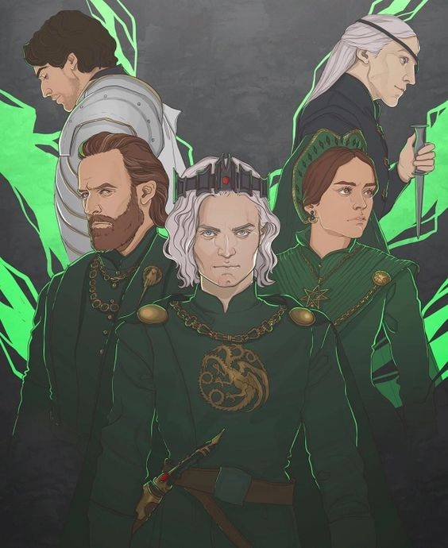
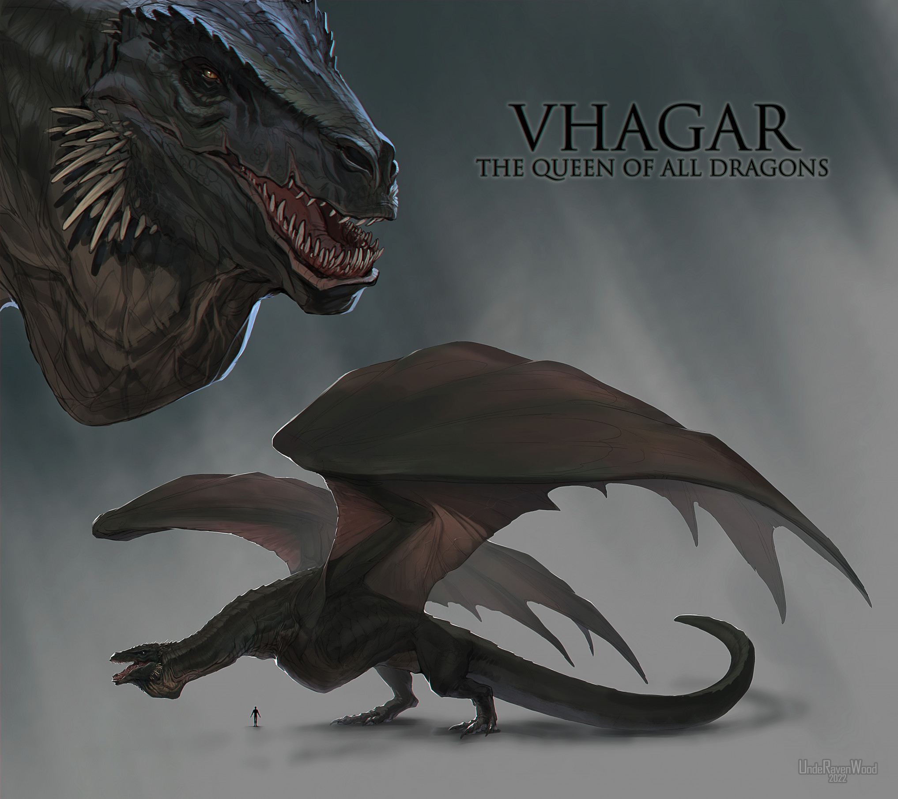
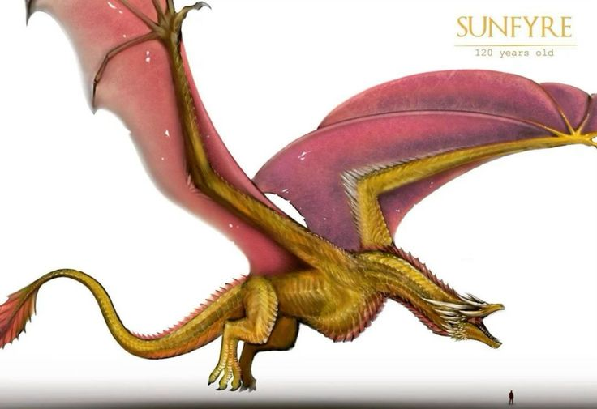

BANDO DE LOS VERDES
Los Verdes es el nombre con que se conoció a la facción de la Casa Targaryen y sus partidarios que apoyaron la causa de Aegon II Targaryen como Rey de los Siete Reinos durante la Danza de los Dragones.
DRAGONES DE LOS VERDES
Vhagar fue uno de los grandes dragones de la Casa Targaryen usados desde la Guerra de la Conquista. Era el dragón ligado a la reina Visenya Targaryen,[1] que posteriormente también fue montado por el príncipe Baelon Targaryen,[2] Lady Laena Velaryon[3] y el príncipe Aemond Targaryen
Fuegosol, también conocido como el Dorado, fue el dragón del rey Aegon II Targaryen. El emblema personal de Aegon era un dragón tricefalo dorado en referencia a Fuegosol